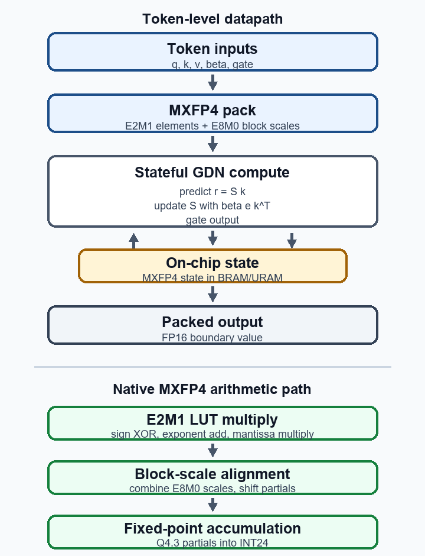

FPGA / HLS / digital systems
Native MXFP4 Gated DeltaNet decode on FPGA
Draft research prototype for a persistent-state FPGA decode datapath using native MXFP4 arithmetic.
- Problem
- Reduce movement around recurrent decode state while preserving a compact low-precision datapath.
- Materials
- Draft PDF, datapath diagram, and source/support repository.
- Visible evidence
- Alveo U55C target notes, HLS flow, RTL cosimulation, and Vivado reporting in the linked materials.
